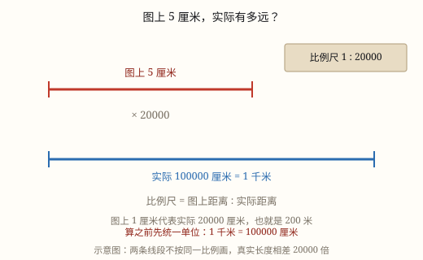
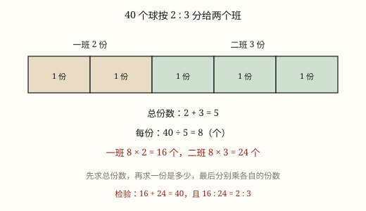

比例尺、按比例分配与杠杆平衡
图上距离与实际距离的比就是比例尺；前项为 1 是缩小，后项为 1 是放大，动笔之前先把单位统一成厘米。
| 所属主题 | 比和比例 |
|---|---|
| 所属模块 | 数与代数 |
| 课标学段 | 第三学段（5~6年级） |
| 前置知识 | 比的意义、化简与正反比例、比的意义、化简与正反比例 |
| 核心素养 | 量感运算能力模型意识应用意识推理意识几何直观 |
教材定位
人民教育出版社《2024年版》
对应六下第 1 单元「比和比例关系」：比例尺。；对应六下第 1 单元「比和比例关系」：按比例分配。；对应六下综合与实践「有趣的平衡」：杠杆平衡的数量关系与反比例雏形。
课标要求
| 数与代数·数量关系 | 在实际情境中理解比和比例以及按比例分配的含义，能解决简单的问题。 印刷第 24 页 行为动词：理解 |
|---|---|
| 数与代数·数量关系 | 通过具体情境，认识成正比的量（如 y/x＝5）（例20）；能探索规律或变化趋势（如 y＝5x）（例21）。 印刷第 24 页 行为动词：了解 |
| 综合与实践·主题活动 | 有趣的平衡：借助杠杆实验感受“左边刻度数×棋子数＝右边刻度数×棋子数”的相等关系，体会反比例关系的雏形，发展推理意识。 小学部分 行为动词：经历 |
说明
打开手机地图，两个地铁站之间只有几厘米；可实际走一趟，是好几千米。一张纸怎么装得下一座城市？办法是按同一个倍数把每一条长度都缩小，缩得均匀，形状才不会走样。这个「缩小的倍数」，数学里用一个比记录下来，叫比例尺。
图上距离与实际距离的比，就是比例尺，写成 \text图上距离 : \text实际距离 = \text比例尺。常见的写法有三种：1 : 500000，分数形式的 1/500000，还有画一段小尺子标着「0 5 10 千米」的线段式。三种写法说的是同一件事，只是换了个样子。
比例尺有两种。前项是 1 的，叫缩小比例尺——1 : 100 表示图上 1 厘米代表实际 100 厘米（也就是 1 米）。地图、建筑图纸、校园平面图用的都是它，因为真实的东西太大，纸上装不下。
后项是 1 的，叫放大比例尺——2 : 1 表示图上 2 厘米只代表实际 1 厘米，图比实物还大。手表里的齿轮、手机芯片的线路、昆虫的翅膀、显微镜下的细胞，这些东西太小，看不清，就要画大了再看。判断缩放方向只看一条：前项比后项小是缩小，前项比后项大是放大。
比例尺把图上距离、实际距离、比例尺这三个量绑在一起，知道其中两个就能求第三个：求实际距离，用图上距离除以比例尺；求图上距离，用实际距离乘比例尺；求比例尺，就把图上距离和实际距离写成比再化简。
这里有一个绕不过去的关口：单位必须先统一。比例尺是两个长度的比，只有同类单位才能相比；而地图上量出来是厘米，实际距离常写成千米。1 千米 = 100000 厘米，所以 4.5 厘米对应的实际距离，是 4.5 × 2000000 = 9000000 厘米，再换成 90 千米。中间少写一步换算，答案就会差出十万倍。
（按比例分配）
60 块糖要分给甲、乙两人，按 2 : 3 分。不是一人一半，也不是随便抓，而是要让甲拿到的块数与乙拿到的块数正好成 2 : 3。这样一个「按比来分总量」的问题，叫按比例分配。
最朴素的办法是先数份。2 : 3 的意思是「甲拿 2 份、乙拿 3 份」，一共 2 + 3 = 5 份。把这 60 块糖平均分成 5 份，每份就是 60 ÷ 5 = 12 块。甲拿 2 份，12 × 2 = 24 块；乙拿 3 份，12 × 3 = 36 块。
分完要回头查一遍：24 + 36 = 60，正好分完；24 : 36 化简后是 2 : 3，正好是要求的比。两条都对，才说明分对了。
还有一条更本质的路子：看各部分占总量的几分之几。总量被分成 5 份，甲拿 2 份，那么甲拿的就是总量的 2/5，所以甲 = 60 × 2/5 = 24 块；乙占 3/5，60 × 3/5 = 36 块。
这两条路其实是同一条。每份 = 总量 ÷ 总份数，某一份的量 = 每份 × 自己的份数，把每份代进去就得到「总量 × \frac\text自己的份数\text总份数」。份数法好懂，占比法和分数乘法接得上，做题时哪条顺手用哪条。
比里有两项就分两份，有三项就分三份，方法一个字都不用改。混凝土按水泥 : 砂 : 石子 = 2 : 3 : 5 配，总份数就是 2 + 3 + 5 = 10 份，各项分别占总量的 2/10、3/10、5/10。只要是「把一个总量按比拆成几部分」，都是这个套路。
有时题目反过来给条件：不告诉你总量，只告诉你其中一方分到了多少。比如按 2 : 3 分，甲分到 24 块，问一共多少块。先求每份：24 ÷ 2 = 12 块；再求总量：12 × 5 = 60 块。总量、每份、某一份，这三个量知道任意两个，第三个就求得出——份数法这条线是双向可走的。
（杠杆平衡）
把一根直尺架在桌上的一支铅笔上，铅笔就是支点，直尺就能绕着它转。直尺两边按厘米刻上格子，再放上一样重的棋子（或砝码），直尺有时候水平，有时一头翘起来。翘起来的那头，说明那边的「劲」大。
怎样比较两边的劲？一边有 2 枚棋子摆在第 3 格，另一边有 3 枚摆在第 2 格：左边是 2 枚压在第 3 格，右边是 3 枚压在第 2 格。称一称就知道两边的劲一样大，直尺正好水平。写成式子就是：左边的棋子数 × 左边的刻度数 = 右边的棋子数 × 右边的刻度数，这里是 2 × 3 = 3 × 2，都是 6。
把「棋子一样重」这个条件换掉，道理仍然成立：一边放的东西重，就该摆得离支点近一些；一边轻，就该摆得远一些。因为真正在起作用的是「重量 × 离支点的距离」，两边的这个乘积相等，杠杆才平。这句话反过来读就是：左重 × 左距离 = 右重 × 右距离。
这个乘积相等的关系，和六下第 1 单元学的反比例是同一件事的两副面孔。反比例说的是两个量的乘积保持一定；这里如果左边固定住，右边棋子数变成原来的 2 倍，需要的刻度数就变成原来的二分之一（棋子 1 枚要 12 格，2 枚就只要 6 格）——距离和重量一个变大、另一个变小，乘积不动。这具平衡的杠杆，正是反比例关系在实物里的雏形。
生活中的跷跷板、指甲刀、剪刀、开瓶器用的都是同一件事：把手握得离支点远一点，就能用小力气撬动大重量。杠杆平衡的式子告诉我们「省力」到底省在哪里：力气省了，距离就要多走。
使用场景
行程出行：在导航地图上量一量两地的图上距离，用比例尺算出实际要骑多远、开多久。
工程建造：建筑图纸、装修平面图都标着比例尺，工人照着图上的尺寸乘以倍数，就知道现场该做多大。
计量与估算：手表齿轮图、芯片放大图用的是放大比例尺，图上的尺寸要除以倍数才是真实大小。
自然现象：在中国地图上量两个城市之间的直线距离，再用比例尺换成千米，比查资料更直观。
校园生活：给学校画一张平面图，先量出操场的长和宽，再选定一个合适的比例尺。
（按比例分配）
饮食与配比：奶茶按茶 : 奶 = 3 : 1 调，食堂按荤素比例配餐，都是把一锅、一份的总量按比分。
工程建造：混凝土按水泥、砂、石子的比配料，涂料按色浆比例调色，配比错了强度或颜色就不对。
物流运输：一批快递按各分仓的吞吐能力分配，两仓按 5 : 3 分，谁能力强谁多分。
校园生活：一批新图书按三个班的人数比分下去，人多分得多，这样才公平。
家庭与年龄：一个月的公共水电费按各家用人口数分摊，三口之家和两口之家出的钱不一样。
（杠杆平衡）
跷跷板：重的孩子坐得离中间近，轻的坐得远，才玩得平。
撬棍和羊角锤：手握得越靠外，越省力。
指甲刀与剪刀：刀柄长、刀口短，所以省力。
厨房里的开瓶器：一压就开，靠的就是杠杆。
起重机的吊臂：吊臂伸得越长，吊起同样的重物越省力。
注意点
先统一单位再动笔。图上距离用厘米，就把实际距离也化成厘米，算完再换回千米或米。
比例尺是一个比，不带单位。写成 1 : 500000 就行，不能写成「1 : 500000 厘米」。
不要读错。1 : 500000 是「图上 1 厘米代表实际 500000 厘米」，不是「代表 500000 米」。
看清是缩小还是放大。前项 1 是缩小，求实际要乘；后项 1 是放大，求实际要除。
三个量的位置不能换。永远是图上距离在前、实际距离在后，写成实际比图上，比例尺就整个反了。
同一幅图上比例尺只有一个。图上不同两段距离相比，等于实际距离相比，不要给每段另配一个比例尺。
（按比例分配）
总份数要把所有项加起来。三项的比就把三个数相加，漏掉一项，后面全错。
分母是总份数，不是比里的某一项。2 : 3 里甲占的是 2/5，不是 2/3。
顺序不能颠倒。甲 : 乙 = 2 : 3，份数多的那一方拿大的那份，别把两份答案对调。
先把比化成最简再算，数小好算，也不容易按错份数。
分完要检验两条：各部分相加等于总量；各部分的比化简后等于原来的比。
单位跟着总量走。总量是「本」，答案就是「本」；总量是「吨」，答案就是「吨」。
（杠杆平衡）
两边都要乘起来比。 只看棋子数或只看刻度数都会判错。
刻度从支点起算。 支点是 0 格，第几格就是离支点几个格子。
重量不同时要换成重量比。 棋子一样重时才能直接数棋子个数。
这是反比例关系的雏形。 六下第 1 单元会把「两个量乘积一定」写成式子，这里先用实验把它摸出来。

图 1：图上短短一段，乘上进率才是真实距离

图 1：先求总份数，再求一份，最后各乘各的份数
为什么是这样
算理推导
地图是把真实世界按同一个倍数缩小的「照片」。真实世界里每一段长度都乘上这个倍数，所以路还是那条路，弯还是那个弯，形状一点没变——这就是地图能用的根本原因。
把这个倍数写成比，就是比例尺。1 : 500000 的意思是「图上 1 份，实际 500000 份」。前项固定写成 1，是为了读起来方便：一看就知道图上 1 厘米对应实际多少厘米。
正因为每一段都乘同一个倍数，图上距离与实际距离的比值始终不变，两者成正比例。所以图上距离翻倍，实际距离也翻倍：已知图上距离求实际，就乘这个倍数；已知实际距离求图上，就除以它。三个量的关系全从这一条长出来。
放大比例尺的道理一样，只是倍数小于 1。2 : 1 表示图上 2 厘米对实际 1 厘米，图比实物大一倍。它仍然是「图上比实际」，仍然可以化成前项是 1 的样子（2 : 1 = 1 : 0.5），所以公式一个字都不用改。
为什么非要统一单位？比是同类量的比。4.5 厘米和 90 千米不是同一类单位，直接写成 4.5 : 90 等于拿厘米去和千米对除，数值差了 100000 倍。先都化成厘米，两个数才是可比的同类量。
（按比例分配）
把 60 块糖想成 5 小堆，每堆一样多。按 2 : 3 分，就是甲搬走 2 堆、乙搬走 3 堆。这个「搬堆」的动作，就是按比例分配的全部内容。
为什么可以这样搬？因为比只规定几倍的关系，不规定每堆有多大。只要 5 堆一样多，甲拿 2 堆、乙拿 3 堆，两人的块数比就一定是 2 : 3——堆的大小可以变，比例不会变。
那每堆多大？总量 60 平均分成 5 堆，每堆 60 ÷ 5 = 12 块。这一步是整道题的关键，总份数算错，每份就错，后面全错。
甲拿 2 堆，就是 12 × 2 = 24 块；乙拿 3 堆，就是 12 × 3 = 36 块。这就是「先求总份数、再求每份、再乘各自份数」。
换成占比的说法：甲拿的 2 堆，占全部 5 堆的 2/5，所以甲 = 60 × 2/5 = 24。同一个 24，两种算法得出来——因为「2 份占 5 份的 2/5」和「每份 12 乘 2」本来就是一回事。
为什么这样分算公平？因为每一份都一样大，谁拿的份数多谁就多拿，多拿多少也说得清。这就是「按比例」比「随便分」讲道理的地方。
（杠杆平衡）
先看支点的作用：直尺绕支点转，支点左边的棋子离支点越远，转动的效果越强。所以每边的「劲」由两件事决定——有多少枚棋子（多重），离支点几格（多远的距离）。
实验给出关系：把直尺调到水平，记下两边的情况。左 2 枚在第 3 格、右 3 枚在第 2 格，左边是 2 × 3 = 6，右边是 3 × 2 = 6，两边相等；再试左 3 枚在第 4 格、右 2 枚在第 6 格，左边 3 × 4 = 12，右边 2 × 6 = 12，也相等。两次都验证了同一个式子。
把棋子换成重量：每枚棋子一样重时，「棋子数」就是重量的份数；换成轻重不同的物体，「棋子数 × 刻度数」要改成「重量 × 距离」，也就是左重 × 左距离 = 右重 × 右距离。
为什么距离能换重量：支点转动的效果由「力 × 距离」决定。想要同样的效果，力小一点，距离就得大一点，两者的乘积保持不变——这正是反比例关系的形状，也说明这个实验是反比例关系在实物里的雏形。
所以杠杆能省力：把手握得离支点远，同样的重量只要较小的力就能撬动；代价是手要移动更大的距离。省力和省距离不可兼得。
动手实验
量一量教室的长。用卷尺量得 9 米，也就是 900 厘米；在纸上画成 9 厘米，比例尺就是 9 : 900 = 1 : 100。再用 4.5 厘米重画同一间教室，比例尺变成 4.5 : 900 = 1 : 200。把两张图并排放在一起看：都画的是同一间教室，1 : 200 那张小了一半。再多画一张 1 : 50 的（18 厘米），三张摆成一排，你会发现比例尺的后项越大，图上画得越小。最后拿尺子在自己画的那张图上量一条边，用比例尺算回实际长度，和卷尺量出来的一对，方法就通了。 （按比例分配） 准备 60 颗豆子和 5 个一样的杯子，按 2 : 3 分。第一轮：每个杯子放 1 颗，用掉 5 颗；第二轮再每个杯子放 1 颗……这样转 12 轮，60 颗正好放完，每杯 12 颗。把 1、2 号杯倒给甲（共 24 颗），3、4、5 号杯倒给乙（共 36 颗）。这时数一数：24 : 36 化简正是 2 : 3。再用分数算一遍 60 × 2/5 和 60 × 3/5，结果一模一样。最后把 5 杯倒回一堆，故意只分 4 杯给两人，看看剩下 12 颗时比例还成不成立——你会立刻发现总量必须分完，总份数必须数全。 （杠杆平衡） 做一副简易杠杆：直尺（或硬纸板）架在圆珠笔上做支点，标出 0 到 12 的厘米刻度，用同样的小螺母当「棋子」。左边放 2 枚在第 3 格，移动右边直到直尺水平，记下右边放了几枚、在第几格，验一验两边的乘积是不是相等。再固定左边 1 枚在第 12 格，试试右边放 2 枚、3 枚时各要摆在第几格，把结果排成一张表，看「棋子数翻倍、刻度数减半」是不是真的。
按场景的例题
例 1（场景：行程出行） 在导航地图上量距离
一幅地图的比例尺是 1 : 2000000，图上量得两个地铁站相距 4.5 厘米。两站实际相距多少千米？
解：图上距离 : 实际距离 = 1 : 2000000，实际距离是图上距离的 2000000 倍：4.5 × 2000000 = 9000000（厘米）。再换算：9000000 厘米 = 90000 米 = 90 千米。
答：两站实际相距 90 千米。
例 2（场景：工程建造） 看装修平面图定尺寸
一张房屋平面图的比例尺是 1 : 200，图上量得客厅的一面墙长 3.5 厘米。这面墙实际长多少米？
解：实际长度是图上长度的 200 倍：3.5 × 200 = 700（厘米）。700 厘米 = 7 米。
答：这面墙实际长 7 米。
例 3（场景：计量与估算） 看芯片的放大图
一张芯片局部放大图的比例尺是 5 : 1，图上量得一条线路长 2 厘米。这条线路实际长多少毫米？
解：比例尺 5 : 1 表示图上 5 厘米只代表实际 1 厘米，图是放大的，所以实际长度要用除法：2 ÷ 5 = 0.4（厘米）。0.4 厘米 = 4 毫米。
答：这条线路实际长 4 毫米。
例 4（场景：自然现象） 量地图求比例尺
在一幅中国地图上，甲、乙两城的图上距离是 12 厘米，实际直线距离约 480 千米。这幅地图的比例尺是多少？
解：先统一单位：480 千米 = 48000000 厘米。图上距离 : 实际距离 = 12 : 48000000，前后项同时除以 12，得 1 : 4000000。
答：这幅地图的比例尺是 1 : 4000000，即图上 1 厘米表示实际 40 千米。
例 5（场景：饮食与配比） 按配方调一大壶奶茶
奶茶按红茶 : 牛奶 = 3 : 1 调配。要调出 800 毫升奶茶，需要红茶和牛奶各多少毫升？
解：总份数 3 + 1 = 4。每份 800 ÷ 4 = 200 毫升。红茶 200 × 3 = 600 毫升，牛奶 200 × 1 = 200 毫升。检验：600 + 200 = 800，600 : 200 = 3 : 1。
答：需要红茶 600 毫升，牛奶 200 毫升。
例 6（场景：农业生产） 工地按配比拌混凝土
混凝土按水泥 : 砂 : 石子 = 2 : 3 : 5 配制。要拌 20 吨混凝土，三种材料各需多少吨？
解：总份数 2 + 3 + 5 = 10。每份 20 ÷ 10 = 2 吨。水泥 2 × 2 = 4 吨，砂 2 × 3 = 6 吨，石子 2 × 5 = 10 吨。检验：4 + 6 + 10 = 20，4 : 6 : 10 = 2 : 3 : 5。
答：水泥 4 吨，砂 6 吨，石子 10 吨。
例 7（场景：物流运输） 快递分仓按能力分配
一批 2400 件快递要分到两个分仓，按两仓的处理能力 5 : 3 分配。两仓各分多少件？
解：总份数 5 + 3 = 8。每份 2400 ÷ 8 = 300 件。能力强的仓 300 × 5 = 1500 件，另一个仓 300 × 3 = 900 件。也可用占比算：2400 × 5/8 = 1500。检验：1500 + 900 = 2400，1500 : 900 = 5 : 3。
答：两个分仓分别分到 1500 件和 900 件。
例 8（场景：上学日常） 新图书按人数分到三个班
图书馆把 360 本新书分给三个班，三个班的人数比是 40 : 32 : 48。三个班各分到多少本？
解：先把比化成最简：40 : 32 : 48 = 5 : 4 : 6。总份数 5 + 4 + 6 = 15。每份 360 ÷ 15 = 24 本。三个班分别是 24 × 5 = 120 本、24 × 4 = 96 本、24 × 6 = 144 本。检验：120 + 96 + 144 = 360。
答：三个班分别分到 120 本、96 本、144 本。
例 9（场景：校园生活） 直尺两端摆棋子
支点在直尺的 0 格处。左边放 2 枚棋子于第 3 格，右边放 3 枚棋子，要使直尺水平，右边应放在第几格？
解：水平时两边的乘积要相等：左边 2 × 3 = 6，右边是 3 枚棋子，设在第 x 格，则 3 × x = 6，得 x = 2。所以右边放第 2 格时两边一样重，直尺水平。
答：右边应放在第 2 格。
例 10（场景：家庭与年龄） 跷跷板两头的孩子
爸爸重 60 千克，坐在离支点 2 格处；小明重 40 千克，要坐在离支点几格处，跷跷板才平衡？
解：平衡时「重量 × 距离」两边相等：爸爸这边 60 × 2 = 120，小明坐在第 x 格则 40 × x = 120，得 x = 3。所以小明要坐在离支点 3 格处（比爸爸远 1 格），正好把跷跷板压平。
答：小明要坐在离支点 3 格处。
例 11（场景：绿化照明） 换棋子找平衡
支点在 0 格处。左边放 3 枚棋子于第 4 格，要让直尺水平，右边放 1 枚棋子应在第几格？若右边改放 2 枚棋子呢？
解：左边 3 × 4 = 12。右边 1 枚时，1 × x = 12，x = 12，即第 12 格；右边 2 枚时，2 × x = 12，x = 6，即第 6 格。棋子数变成 2 倍，刻度数就减到一半，乘积始终是 12。
答：1 枚放第 12 格，2 枚放第 6 格。
例 12（场景：购物消费） 超市里的天平
超市有一杆托盘天平，支点在正中间，两边力臂一样长。左盘放一袋 2 千克的大米，要让天平平衡，右盘至少要放多少克米？
解：天平两臂一样长，平衡时两边的重量必须相等。左盘是 2 千克 = 2000 克，所以右盘至少要 2000 克米；如果一袋是 500 克，就要 2000 ÷ 500 = 4 袋。
答：右盘至少要放 2000 克米，也就是 4 袋（每袋 500 克）。
常用推论
图上距离 : 实际距离 = 比例尺；由此可得实际距离 = 图上距离 ÷ 比例尺，图上距离 = 实际距离 × 比例尺。
比例尺是一个比，没有单位；前项是 1 为缩小比例尺，后项是 1 为放大比例尺。
同一幅地图上，图上距离与实际距离成正比例，两段图上距离的比等于它们实际距离的比。
比例尺的后项越大，图缩得越小：1 : 100 的图比 1 : 1000 的图画得大。
某一份的量 = 总量 × 该份占总量的几分之几，如总量按 2 : 3 分，占 2 份的那部分 = 总量 × 2/5。
总份数 = 各项份数之和；每份 = 总量 ÷ 总份数；某一份 = 每份 × 该项的份数。
已知其中一份的量，可以先求每份，再求总量：总量 = 每份 × 总份数。
检验按比例分配的结果，看两条：各部分相加等于总量；各部分写成比后化简，等于题目给的比。
平衡公式：左棋子数 × 左刻度数 = 右棋子数 × 右刻度数；换成重量就是左重 × 左距离 = 右重 × 右距离。
反比例的胚芽：一边固定，另一边重量翻倍则距离减半，乘积始终不变——这正是反比例「两个量乘积一定」的样子。
支点位置决定省不省力：支点往重物那边挪，重物那侧的力臂变短、另一侧变长，用的力就变小。
跷跷板法则：重的一方坐得离支点近，轻的一方坐得远；两边「重量 × 距离」相等就平。
生活中的杠杆：跷跷板、剪刀、开瓶器、指甲刀、扳手、起重吊臂，用的都是同一个关系。
易错点
错比例尺 1 : 2000000，图上 4.5 厘米，算成 4.5 × 2000000 = 9000000 千米。
为什么错图上距离的单位是厘米，乘出来的结果也是厘米，没有换算就直接写成了千米。
正确9000000 厘米 = 90 千米。先算厘米，再除以 100000 换成千米。
错把 1 : 500000 读成「图上 1 厘米表示实际 500000 米」。
为什么错比例尺前后项是同类量，前项是厘米，后项也是厘米。500000 厘米只有 5 千米。
正确1 : 500000 表示图上 1 厘米代表实际 500000 厘米，也就是 5 千米。
错放大比例尺 5 : 1，图上 2 厘米，算成 2 × 5 = 10 厘米。
为什么错前项大、后项小是放大，图上尺寸比实物大，求实际应该变小，用乘法就越算越大。
正确2 ÷ 5 = 0.4 厘米 = 4 毫米。
错把比例尺写成「1 : 2000000 厘米」，或者把比写成「实际距离 : 图上距离」。
为什么错比例尺是两个同类量的比，本身不带单位；顺序也固定为图上在前、实际在后，反了就成了它的倒数。
正确写作 1 : 2000000，读作图上 1 厘米代表实际 2000000 厘米。
错60 块糖按 2 : 3 分，算成每份 60 ÷ 3 = 20 块。
为什么错3 只是乙的份数，不是总份数。总份数要把两项加起来，2 + 3 = 5。
正确总份数 5，每份 60 ÷ 5 = 12 块，甲 24 块、乙 36 块。
错求甲拿多少，写成 60 × 2/3 = 40 块。
为什么错甲占的是总量的 2/5，分母必须是总份数 5。写成 2/3 等于把 3 当成了总量。
正确60 × 2/5 = 24 块。
错甲 : 乙 = 2 : 3，算完写成「甲 36 块，乙 24 块」。
为什么错2 份对应的是甲，3 份对应的是乙，份数多的那一方拿得多。把答案对调，比例就反了。
正确甲 12 × 2 = 24 块，乙 12 × 3 = 36 块，验算 24 : 36 = 2 : 3。
错混凝土按 2 : 3 : 5 配 20 吨，总份数只算 2 + 3 = 5，把石子漏掉了。
为什么错三项的比就有三份，漏掉任何一项，总份数变小，每份被算大，三项加起来会超过总量。
正确总份数 2 + 3 + 5 = 10，每份 2 吨，得 4 吨、6 吨、10 吨，加起来正好 20 吨。
错认为左边 3 枚棋子、右边 2 枚棋子，左边一定翘起来。
为什么错只看棋子数不够，还要看离支点多远。左边 3 枚在第 2 格是 6，右边 2 枚在第 3 格也是 6，两边一样重，直尺是平的。
正确要比的是「棋子数 × 刻度数」，两个乘积相等才平衡。
错算成 2 × 3 + 3 × 2 = 12，两边相等所以平衡。
为什么错两边的劲要各自算出来再比，不是把两边加起来。相加等于 12 只说明两个乘积都是 6，要说明的是它们相等而不是和为 12。
正确左边 2 × 3 = 6，右边 3 × 2 = 6，两个乘积相等，直尺水平。
错把支点当成 0 格以外的某一格，从直尺左端开始数刻度。
为什么错刻度数记的是离支点有多远，支点必须是 0 格。从端点数起，算出来的距离就全错了。
正确支点是 0 格，往左往右各按厘米数格数。
错认为把 2 枚棋子换成 2 枚更重的棋子，平衡位置不变。
为什么错重量变了，乘积要重新配。同样的格子放更重的东西，一边更沉，直尺会翘起来，要重新找平衡位置。
正确重量变了就重新配「重量 × 距离」，让两边乘积重新相等。
直观理解
比例尺像手机相册的缩放键：1 : 500000 就是把整个世界按五十万分之一拍进一张纸，缩得均匀，所以路还是那条路。放大比例尺则是拿放大镜看芝麻大的芯片，图上看着大，实际很小。不管放大还是缩小，规矩只有一条——图上距离与实际距离的比，永远是那个固定的数。 （按比例分配） 按比例分配就像切蛋糕：2 : 3 不是「你一块我一块」，而是先把蛋糕切成 5 块一样大的，你拿 2 块、我拿 3 块。切的时候刀口要均匀——这就是「先求每份」；拿的时候按份数——这就是「再乘份数」。块数多的人不是因为运气好，是因为他该得的那份本来就多。 （杠杆平衡） 杠杆像一只以支点为轴的转盘：一边压下去的力气越大，它离轴越远就转得越省劲。放得近的重物，用小力气就够；放得远的轻物，也一样能把另一边压住。转盘只认「力气 × 距离」这一个乘积，所以力气和距离一个变大、一个变小，乘积不变——反比例的秘密就藏在这个转盘里。
图上比实际，就是比例尺；前项是一是缩小，后项是一是放大。厘米对厘米，千米先化开；知二求一，乘除别搞反。 （按比例分配） 按比分配不难算，先求总份再除完；每份乘上各自份，或者占比乘总量。分完加回看一看，化简还得是原比。 （杠杆平衡） 支点两旁棋子排，左边数乘左格数；等于右边数乘右格数；重量越重离支点越近，力气越小距离越长。